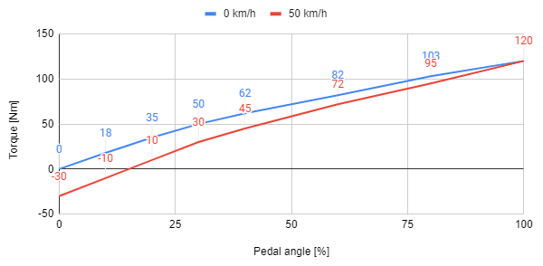

|
My Project
|
Note: the assignment and the tools used are not necessarily similar to what we do/use in reality!
We assume you have a Linux environment in which you can use git/gcc/g++ (can be native Linux, a virtual machine, WSL, MinGW). If you don’t have such an environment yet the fastest is probably if you install Git for Windows, which comes with a bash console with git and gcc installed.
Additionally, you optionally might want to install doxygen and plantuml, but you can do without.
Please have a look at this repo and all the files that it contains.
For the drivetrain of a prototype vehicle you are asked to implement the part that determines the requested torque based on the user input. The user does this by pressing the throttle pedal.
There are multiple options regarding the throttle pedal, but for now the engineers seem to have selected one that produces two analog output signals, which are connected to a microcontroller.
The relation between the analog signals (redundant for safety reasons) and the pedal angle (min = 0 degrees, max = 30 degrees) are as follows:
adc1 = 0.5 + 0.1 * angleadc2 = 1.0 + 0.08 * angleWhere adc1 and adc2 are voltages and the angle is in degrees. These analog inputs require some basic low pass filtering (moving average).
This pedal angle corresponds to an amount of torque that the motors must provide. This torque is not only dependent on the pedal angle, it’s also dependent on the current speed of the vehicle. The torque for each speed and pedal angle can be found in the graph below.

In case something goes wrong, in our prototype an LED should light up on the dashboard to indicate something is wrong (in a real production vehicle an error message will be shown on the instrument cluster).
The following commands might come in handy:
gcc -pthread $(find src -name "*.c") -Isrc -o maindoxygen doc/Doxyfile. Afterwards you can open the generated html that’s at doxygen_output/html/index.htmlPlease note:
1.8.17